정규 분포 개념 및 차트 만들기
Classification in Python with Scikit-Learn and Pandas
Classification is a large domain in the field of statistics and machine learning. Generally, classification can be broken down into two areas:
Binary classification, where we wish to group an outcome into one of two groups.
Multi-class classification, where we wish to group an outcome into one of multiple (more than two) groups
분류는 통계 및 기계 학습 분야에서 큰 영역입니다. 일반적으로 분류는 두 가지 영역으로 나눌 수 있습니다.
결과를 두 그룹 중 하나로 그룹화하려는 이진 분류.
결과를 여러(둘 이상) 그룹 중 하나로 그룹화하려는 다중 클래스 분류입니다.
파이썬으로 정규 분포 데이터와 차트 만들기
Numpy의 linspace 함수를 이용해 특정범위의 일정 간격의 랜덤 값을 생성한다
import numpy as np
x= np.linspace(-3,3,200)
print(x)
[-3. -2.96984925 -2.93969849 -2.90954774 -2.87939698 -2.84924623
-2.81909548 -2.78894472 -2.75879397 -2.72864322 -2.69849246 -2.66834171
-2.63819095 -2.6080402 -2.57788945 -2.54773869 -2.51758794 -2.48743719
-2.45728643 -2.42713568 -2.39698492 -2.36683417 -2.33668342 -2.30653266
-2.27638191 -2.24623116 -2.2160804 -2.18592965 -2.15577889 -2.12562814
-2.09547739 -2.06532663 -2.03517588 -2.00502513 -1.97487437 -1.94472362
-1.91457286 -1.88442211 -1.85427136 -1.8241206 -1.79396985 -1.7638191
-1.73366834 -1.70351759 -1.67336683 -1.64321608 -1.61306533 -1.58291457
-1.55276382 -1.52261307 -1.49246231 -1.46231156 -1.4321608 -1.40201005
-1.3718593 -1.34170854 -1.31155779 -1.28140704 -1.25125628 -1.22110553
-1.19095477 -1.16080402 -1.13065327 -1.10050251 -1.07035176 -1.04020101
-1.01005025 -0.9798995 -0.94974874 -0.91959799 -0.88944724 -0.85929648
-0.82914573 -0.79899497 -0.76884422 -0.73869347 -0.70854271 -0.67839196
-0.64824121 -0.61809045 -0.5879397 -0.55778894 -0.52763819 -0.49748744
-0.46733668 -0.43718593 -0.40703518 -0.37688442 -0.34673367 -0.31658291
-0.28643216 -0.25628141 -0.22613065 -0.1959799 -0.16582915 -0.13567839
-0.10552764 -0.07537688 -0.04522613 -0.01507538 0.01507538 0.04522613
0.07537688 0.10552764 0.13567839 0.16582915 0.1959799 0.22613065
0.25628141 0.28643216 0.31658291 0.34673367 0.37688442 0.40703518
0.43718593 0.46733668 0.49748744 0.52763819 0.55778894 0.5879397
0.61809045 0.64824121 0.67839196 0.70854271 0.73869347 0.76884422
0.79899497 0.82914573 0.85929648 0.88944724 0.91959799 0.94974874
0.9798995 1.01005025 1.04020101 1.07035176 1.10050251 1.13065327
1.16080402 1.19095477 1.22110553 1.25125628 1.28140704 1.31155779
1.34170854 1.3718593 1.40201005 1.4321608 1.46231156 1.49246231
1.52261307 1.55276382 1.58291457 1.61306533 1.64321608 1.67336683
1.70351759 1.73366834 1.7638191 1.79396985 1.8241206 1.85427136
1.88442211 1.91457286 1.94472362 1.97487437 2.00502513 2.03517588
2.06532663 2.09547739 2.12562814 2.15577889 2.18592965 2.2160804
2.24623116 2.27638191 2.30653266 2.33668342 2.36683417 2.39698492
2.42713568 2.45728643 2.48743719 2.51758794 2.54773869 2.57788945
2.6080402 2.63819095 2.66834171 2.69849246 2.72864322 2.75879397
2.78894472 2.81909548 2.84924623 2.87939698 2.90954774 2.93969849
2.96984925 3. ]
Scipy 패키지를 이용하여 정규분포의 활률밀도함수를 구할 수 있다.
norm()은 정규분포를 나타내며 pdf()는 확률밀도함수(Probability Density Function, PDF)를 나타낸다.
import scipy.stats as stats
y = stats.norm(0,1).pdf(x)
print(y)
[0.00443185 0.0048492 0.00530104 0.00578971 0.00631769 0.00688754
0.00750198 0.00816381 0.00887594 0.00964143 0.01046343 0.01134518
0.01229006 0.01330154 0.01438318 0.01553865 0.01677169 0.01808612
0.01948585 0.02097483 0.02255707 0.02423662 0.02601757 0.02790401
0.02990003 0.03200972 0.03423712 0.03658625 0.03906104 0.04166533
0.04440287 0.04727727 0.05029201 0.05345039 0.05675549 0.0602102
0.06381716 0.06757874 0.07149701 0.07557373 0.07981032 0.08420782
0.0887669 0.09348777 0.09837025 0.10341367 0.10861688 0.11397823
0.11949554 0.12516608 0.13098658 0.13695319 0.14306148 0.14930641
0.15568236 0.16218308 0.16880173 0.17553084 0.18236234 0.18928757
0.19629725 0.20338155 0.21053004 0.21773176 0.22497523 0.23224844
0.23953894 0.2468338 0.2541197 0.26138293 0.26860947 0.27578499
0.28289489 0.28992442 0.29685863 0.30368249 0.31038093 0.31693887
0.3233413 0.32957332 0.33562021 0.3414675 0.34710097 0.35250679
0.3576715 0.36258212 0.36722617 0.37159175 0.37566757 0.379443
0.38290812 0.38605377 0.3888716 0.39135406 0.3934945 0.39528714
0.39672713 0.39781056 0.39853449 0.39889695 0.39889695 0.39853449
0.39781056 0.39672713 0.39528714 0.3934945 0.39135406 0.3888716
0.38605377 0.38290812 0.379443 0.37566757 0.37159175 0.36722617
0.36258212 0.3576715 0.35250679 0.34710097 0.3414675 0.33562021
0.32957332 0.3233413 0.31693887 0.31038093 0.30368249 0.29685863
0.28992442 0.28289489 0.27578499 0.26860947 0.26138293 0.2541197
0.2468338 0.23953894 0.23224844 0.22497523 0.21773176 0.21053004
0.20338155 0.19629725 0.18928757 0.18236234 0.17553084 0.16880173
0.16218308 0.15568236 0.14930641 0.14306148 0.13695319 0.13098658
0.12516608 0.11949554 0.11397823 0.10861688 0.10341367 0.09837025
0.09348777 0.0887669 0.08420782 0.07981032 0.07557373 0.07149701
0.06757874 0.06381716 0.0602102 0.05675549 0.05345039 0.05029201
0.04727727 0.04440287 0.04166533 0.03906104 0.03658625 0.03423712
0.03200972 0.02990003 0.02790401 0.02601757 0.02423662 0.02255707
0.02097483 0.01948585 0.01808612 0.01677169 0.01553865 0.01438318
0.01330154 0.01229006 0.01134518 0.01046343 0.00964143 0.00887594
0.00816381 0.00750198 0.00688754 0.00631769 0.00578971 0.00530104
0.0048492 0.00443185]
import scipy.stats as stats
import numpy as np
import matplotlib.pyplot as plt
# -3에서 3까지 일정한 간격으로 200개의 데이터를 생성
x = np.linspace(-3, 3, 200)
# 평균이 0, 표준편차가 1인 random variable을 생성
y = stats.norm(0, 1).pdf(x)
# 챠트 생성
plt.plot(x, y)
plt.xlabel("x")
plt.ylabel("y")
plt.show()
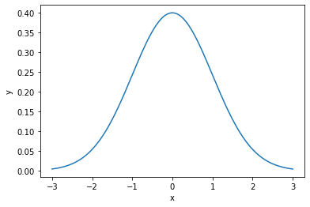
연속확률분포, 정규분포, 표준정규분포
우리가 셀 수 있는 확률변수들의 분포를 이산확률분포라고 불렀습니다. 이러한 이산확률분포 중에는 대표적으로 이항분포와 포아송 분포가 있었습니다.
이산확률분포와는 다르게, 정규분포는 0과 1사이의 임의의 실수처럼 셀 수 없는 연속적인 값을 가지는 연속확률분포입니다. 정규분포는 연속적인 값을 가지는 확률변수의 분포를 나타내는데 가장 많이 적용되고 있는 분포입니다. 정규분포 외에도 데이터에 따라 더 적합한 분포들도 많이 제안되어 왔지만, 여전히 가장 강력하고 일상적으로 적용되고 있는 분포입니다.
[연속활률분포]
본격적으로 정규분포에 대해서 알아보기 전에, 연속확률분포에 대해서 알아보겠습니다. 연속확률분포는 이산확률분포처럼 발생가능한 모든 값에 확률을 대응/나열하여 표현하기가 어렵습니다. 발생 가능한 값이 무한대이기 때문입니다.
따라서 연속확률분포는 주어진 구간에서 확률이 어떻게 분포하는지를 판단하게 되고, 어느 구간의 확률이 작은지, 큰지를 나타낼 수 있는 함수를 이용하게 됩니다.
연속확률변수 X의 확률분포는 확률의 밀도를 나타내는 확률밀도함수에 의해 결정되며, 확률밀도함수는 아래와 같은 조건을 만족해야합니다.
from IPython.display import Image # 주피터 노트북에 이미지 삽입
Image("C://Users/MyCom/jupyter-tutorial/수업자료/응용/data/normal/20211019_174756_1.png")
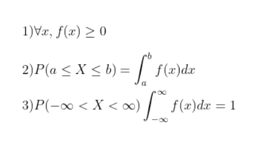
[정규분포(normal distribution)]
정규뷴포는 “평균”, “분산”에 의해서 그 분포가 확정됩니다. 그 확률밀도함수의 대략적인 특성은 다음과 같습니다.
Image("C://Users/MyCom/jupyter-tutorial/수업자료/응용/data/normal/20211019_174756_2.png")
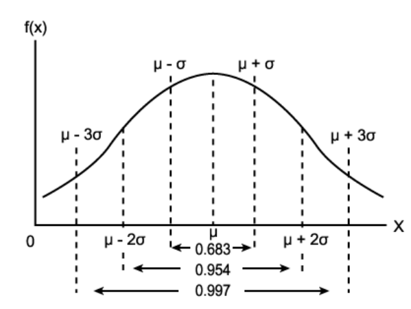
위의 사진에서 보는 것같이 확률 변수 X가 평균으로부터 1표준편차, 2표준편차, 3표준편차 사이에 있을 확률은 아래와 같습니다.
Image("C://Users/MyCom/jupyter-tutorial/수업자료/응용/data/normal/20211019_174756_3.png")
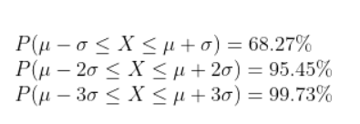
확률변수 X가 평균 μ, 표준편차 σ인 정규분포를 따를 때 주로 N(μ,σ^2)로 표현하게 됩니다. 표준편차 σ가 커질수록 정규분포의 모형은 옆으로 퍼지게 됩니다. 즉 퍼진정도가 커지게 됩니다.
Image("C://Users/MyCom/jupyter-tutorial/수업자료/응용/data/normal/20211019_174756_4.png")
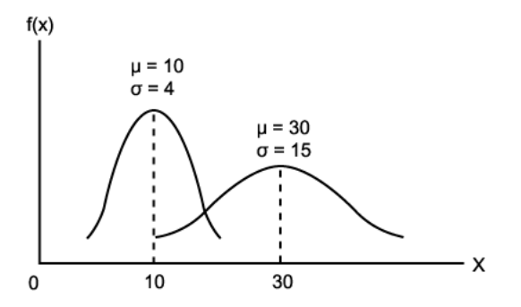
[표준정규분포(Standard normal distribution)]
표준정규분포는 평균이 0이고 표준편차가 1인 정규분포를 나타냅니다. 표준정규분포를 가지는 확률변수를 Z라고 표현했을 때 확률변슈 Z는 0을 중심으로 대칭인 분포를 가지게 됩니다.
Image("C://Users/MyCom/jupyter-tutorial/수업자료/응용/data/normal/20211019_174756_5.png")
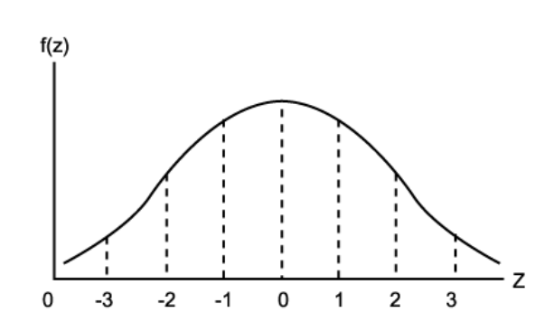
표준정규분포에서 확률변수 Z가 임의구간 [a,b]에 있을 확률은 아래와 같습니다.
Image("C://Users/MyCom/jupyter-tutorial/수업자료/응용/data/normal/20211019_174756_6.png")
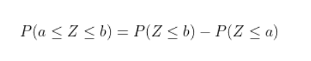
만약 정규분포를 따르는 확률변수 X가 주어졌을 떄, 확률변수 X의 평균값(μ)과 표준편차값(σ)을 이용하여 평균이 0이고 표준편차가 1인 표준정규확률변수 Z로 변환할 수 있습니다.
Image("C://Users/MyCom/jupyter-tutorial/수업자료/응용/data/normal/20211019_174756_7.png")
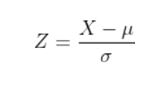
파이썬을 활용하여 정규분포를 Simulation 해보도록 하겠습니다.
## 필요 Module Import
from scipy.stats import norm
import matplotlib.pyplot as plt
import numpy as np
import pandas as pd
mu = 10
std = 1
norm_ = norm(mu,std) ## 평균 10, 표준편차 1인 정규분포 생성
## 시각화
x = np.linspace(norm_.ppf(0.01), norm_.ppf(0.99),1000) ## 1%일때 x값, 99%일때 x값 사이의 x값 생성
plt.plot(x, norm_.pdf(x),'r-', lw=5, alpha=0.6, label='norm pdf')
plt.legend()
plt.show()
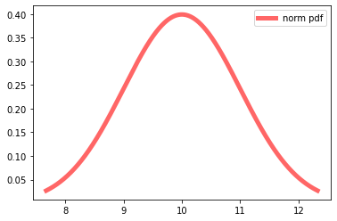
data_norm = norm_.rvs(100000) ## 평균 10, 표준편차 1의 정규분포를 따르는 데이터 생성 /rvs 랜덤 샘플 생성 (random variable sampling)
plt.hist(data_norm, density =True, histtype = "stepfilled", alpha=0.2, label = "norm_hist")
plt.legend()
plt.show()
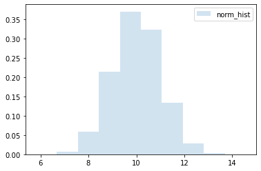
## 동시에 시각화 표현
fig, ax = plt.subplots(1, 1)
ax.plot(x, norm_.pdf(x),'r-', lw=5, alpha=0.6, label='norm pdf')
ax.hist(data_norm, density =True, histtype = "stepfilled", alpha=0.2, label = "simulation")
ax.legend(loc="upper right")
plt.show()
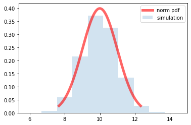